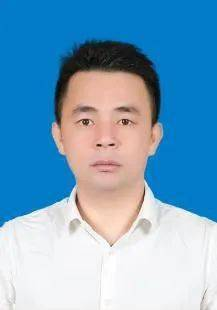

咨询热线：10086
Toggle navigation
首页
发展变化
先进事迹
红色故事
合作店铺
土特产店铺
了解更多
注册/登录
先进视频
优秀青年
争做青年榜样! 海口这些优秀青年的先进事迹
值得学习!
陈垠锟始终坚持做一名勇于在管理上谋变革、在技术上求创新的“蓝领创客”，带领“电哥电嫂服务队”优化方 案、跟进项目，缩短工期，有效在高温来袭前完成永兴镇重点民宿供电项目建设，为乡村振兴贡献力量；新冠肺炎疫情期间，他主动上门，悉心服务企业复产复工，落实缓交及“欠费不停供”措施政策，免收滞纳金，让中小企业拍手称赞。
-陈垠锟 /
第二十七届“海南青年五四奖章”获得者。

2010年大学毕业后，陈槐柏回到海口市秀英区永德村委会纯雅村担任大学生村官，带领纯雅村全体村民共同努力，发展乡村产业、美化村容村貌、捐资助学、修建水塔，修建及扩宽永德村委会辖区内的十个自然村共31公里的便捷生产道路，解决了村民所急所需所盼的问题，帮助村民提高生产效益和收入。
-陈槐柏 /
海口市秀英区永兴镇永德村党支部书记、村委会主任.
欧阳资在推进海口市志愿服务工作常态化、项目化、专业化发展过程中，在生态环保、应急救灾、扶贫帮困、赛会保障等志愿服务工作中发挥了共青团干部先锋模范作用，在面对各类急难险重的突发情况时都能够主动担当、积极作为。他先后三次被评为“海南省优秀共青团干部”，获全国学雷锋志愿服务四个100“最美志愿者”、海口市优秀共产党员、海口市“双创”工作先进个人、海南省抗风救灾先进志愿者等荣誉称号。
-欧阳资 /
共青团海口市委员会志愿服务与社会工作部部长，全国优秀共青团干部。
陈垠锟始终坚持做一名勇于在管理上谋变革、在技术上求创新的“蓝领创客”，带领“电哥电嫂服务队”优化方 案、跟进项目，缩短工期，有效在高温来袭前完成永兴镇重点民宿供电项目建设，为乡村振兴贡献力量；新冠肺炎疫情期间，他主动上门，悉心服务企业复产复工，落实缓交及“欠费不停供”措施政策，免收滞纳金，让中小企业拍手称赞。
-陈垠锟 / 第二十七届“海南青年五四奖章”获得者。